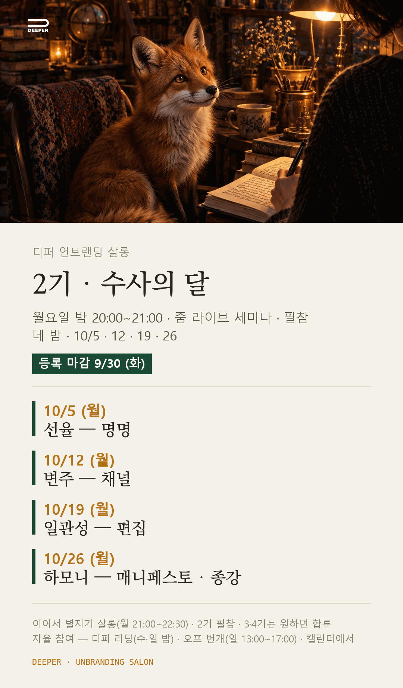

2기 · 수사의 달
손에 쥔 악보를 내 말로 부르는 한 달
2026. 10. 5 — 10. 26 · MON 20:00
수사의 달을 엽니다
수사의 달을 엽니다. 10월 5일 월요일 밤 8시에 시작합니다.
논리의 달 마지막 밤에 악보 한 장이 손에 남았습니다. 수사의 달은 그 악보를 내 말로 부르는 한 달입니다. 이름을 짓고, 채널을 열고, 나답지 않은 문장을 지우고, 마지막 밤에 매니페스토를 낭독합니다.
「나만의 결」에서 나온 낱말 사슬이 경이의 방에 놓이는 첫 카드가 됩니다. 악보가 생기면 여우를 다시 불러 주세요. 살롱 첫 회에 그 방부터 엽니다.
경이의 방
진귀한 것을 모아 둔 방을 옛사람들은 분더카머라 불렀습니다. 수사의 달에서는 내 문장을 모으는 방의 이름입니다. 한 달 동안 이 방 안에서만 일합니다.
문장을 줍고, 놓고, 순서를 바꿉니다.
방을 한 번 돌릴 때마다 사이에서 하나가 짚이고, 그것이 다음 카드가 됩니다.
어떻게 걷나요
매주 한 소절씩, 악보의 한 줄을 소리로 바꿉니다. 두 권을 나란히 읽습니다. 『에디톨로지』에서는 개념을 빌려 오고, 『분더카머』에서는 문장을 줍습니다.
10 / 05 (MON) · WEEK 01
선율 — 명명
내가 서 있을 자리. 경이의 방을 열어 한 바퀴 둘러보고, 한 달을 관통할 으뜸음과 이름을 정합니다.
- 그 밤에 손에 남는 것
- 이름 후보 2~3개와 첫 카드 두 장 — 방에 놓인 첫 배열. 여우가 파일로 남깁니다.
- 함께 읽는 대목
- 『에디톨로지』 프롤로그와 1부 — 창조는 편집이다. 그리고 『분더카머』 「초대장」에서 「숲속의 성」까지. 완독은 걸지 않습니다. 걸리는 꼭지 하나면 그 주의 카드 한 장입니다.
- 그 주의 실습
- 이름 정하기. 이름은 지어내지 않고 이미 내 글 안에 있던 말에서 꺼냅니다. 소리 내어 읽어 입에 붙는 후보만 남깁니다.
10 / 12 (MON) · WEEK 02
변주 — 채널
내 목소리가 사는 자리. 채널을 정하고, 계속 갈 수 있는 가장 작은 발행 단위를 고릅니다.
- 그 밤에 손에 남는 것
- 채널 선언 한 장과 첫 발행 한 편 — 어디서, 얼마나 자주, 어떤 크기로. 그리고 실제로 한 번.
- 함께 읽는 대목
- 『에디톨로지』 2부 — 관점이 곧 편집이라는 것. 그리고 『분더카머』 「검은 숲, 동어반복, 흰 숲」에서 「전령사의 꿈」까지.
- 그 주의 실습
- 작게 한 번 소리내기. 완성본이 아니라 가장 작은 조각 하나. 방을 감정의 결과 독자의 문제 순으로 두 번 돌리고, 사이에서 짚인 것을 카드로 남깁니다.
10 / 19 (MON) · WEEK 03
일관성 — 편집
나다운 언어로 단단하게. 방을 크게 한 바퀴 정돈하고, 목차를 세우고, 초고를 조립합니다.
- 그 밤에 손에 남는 것
- 목차 한 장과 초고 v0 — 여우는 새 문장을 쓰지 않고 엮기만 합니다. 아직 채우지 못한 자리는 비어 있는 방으로 남습니다.
- 함께 읽는 대목
- 『에디톨로지』 3부와 에필로그 — '나'도 편집이라는 것. 그리고 『분더카머』 「생성의 벽장」에서 「덧」까지.
- 그 주의 실습
- 나답지 않은 문장 지우기. 뜻밖의 짝으로 한 번 더 돌립니다. 그 배열의 차원에 이름을 붙입니다. 이름이 붙으면 그것이 내 메타언어입니다.
10 / 26 (MON) · WEEK 04 · 종강
하모니 — 매니페스토
함께 부르기. 한 달의 낱장을 한자리에 모으고 소리 내어 읽습니다. 이 밤이 종강입니다. 마지막 30분은 별지기 설명회로 이어집니다.
- 그 밤에 손에 남는 것
- 매니페스토 다섯에서 일곱 줄, 그리고 열 장의 머리말. 열 번째 장에는 내가 낳은 개념어 하나가 놓입니다. 낱말은 반드시 내 카드 안에 있던 말로.
- 함께 읽는 대목
- 새로 읽지 않습니다. 두 권에서 가장 오래 남은 한 대목을 각자 골라 소리 내어 읽습니다.
- 그 주의 실습
- 낭독. 과장 없이, 내 말로. 입에 붙지 않는 줄은 그 자리에서 고칩니다. 검산은 귀로 합니다.
두 권을 곁에 둡니다
이 달의 뼈대는 김정운의 『에디톨로지』입니다. 창조는 편집이다 — 그 한 문장을 각자의 재료로 한 번 걸어 봅니다. 4회에 걸쳐 프롤로그부터 에필로그까지 한 부씩 나눠 읽습니다.
곁에 얹는 둘째 책은 윤경희의 『분더카머』(문학과지성사, 2021)입니다. 진귀한 것을 모아 둔 방이라는 뜻의 이 낱말이, 수사의 달에서 내 문장을 모으는 방의 이름이 됩니다. 완독은 걸지 않습니다. 걸리는 꼭지 하나면 그 주의 카드 한 장입니다.
두 권 모두 각자 준비해 주세요. 읽는 방식이 다릅니다. 『에디톨로지』는 개념을 빌려 오는 읽기, 『분더카머』는 문장을 줍는 읽기입니다.
2기 수사의 달 · 카드

수사의 달 안내
| 날짜 | 10월 5일 · 12일 · 19일 · 26일 · 월요일 |
|---|---|
| 시간 | 밤 20:00 – 21:00 · 퍼핀 · 줌 라이브 세미나 |
| 이어서 | 21:00 – 22:30 · 인사이트 공유회 2기 디퍼님은 필참입니다. 3·4기 디퍼님도 원하시면 합류할 수 있습니다. |
| 참여 | 필참 — 줌 세미나 4회 모두 참여합니다 |
| 진행 | 퍼핀 · 별지기 |
| 참가비 | 250,000원 — 논리의 달과 같습니다 (시작 전 전액 환불) |
| 입금 계좌 | 국민은행 640401-04-330210 예금주: 이**(클래식북스) 신청서를 내신 뒤 입금해 주시면 등록이 확정됩니다. 9월 30일(화)까지. |
| 등록 기한 | 9월 30일 (화) |
내 말로 부르는 달
악보는 이미 손에 있습니다.
이제 그것을 내 목소리로 부릅니다.
이 자리는 2기 디퍼님의 것입니다. 9월 30일 화요일까지 답을 주시면 디퍼님의 자리를 그대로 두겠습니다.
자율 참여
이경선
도서출판 클북·슬로어 대표
생각학교ASK를 설립하고, 인문고전 대안학교 운영과 작가 양성 교육, 작가 커뮤니티 활동을 이어왔습니다. 지금은 클로드 에이전트 팀과 출판사를 운영하고, 살롱 1기부터 3기까지 디퍼님들과 AI에 나만의 암묵지와 정체성을 심어 더 깊은 전문성을 갖게 하는 AX 컨설팅을 합니다.